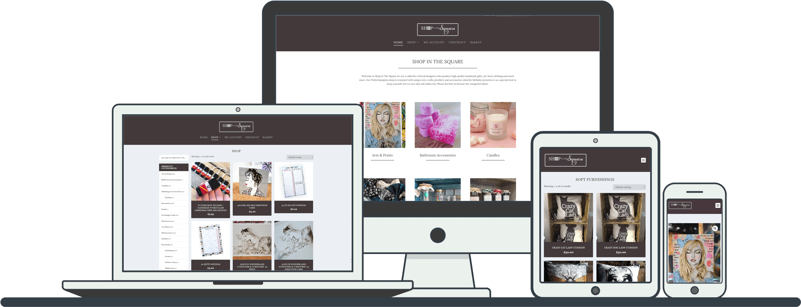
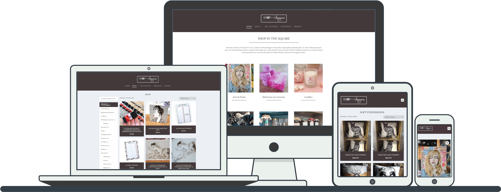

I am a Web Developer.I don't like to define myself by the work I've done.I define myself by the work I want to do.Skills can be taught,personality is inherent.I prefer to keep learning,continue challenging myself, and do interesting things that matter.
Since beginning my journey as a freelance developer nearly just 1 years ago,I've done remote work for agencies,consulted for startups, and collaborated with talented people to create web products for both business and consumer use.

"With software there are only two possibilites: either the users control the programme or the programme controls the users. If the programme controls the users, and the developer controls the programme, then the programme is an instrument of unjust power".